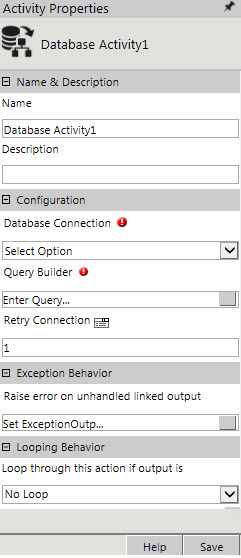
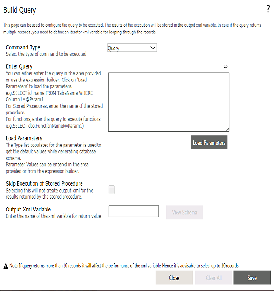
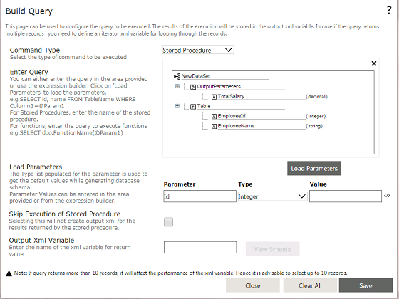
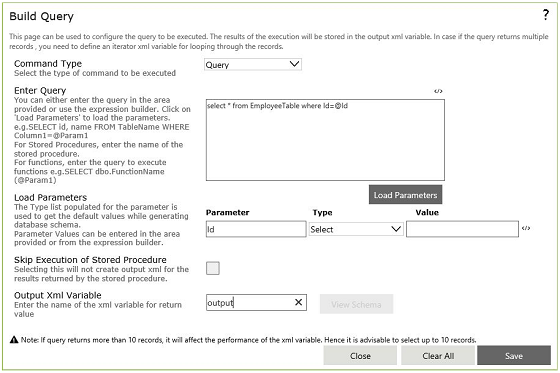
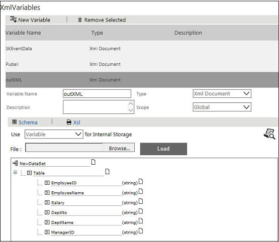

No
Activity Description
The database activity enables execution of queries, stored procedures, and functions from the workflow. The database activity establishes connection with the database server and retrieves or updates data in the database. The activity gets the schema of the database table to an XML variable according to the query, stored procedures, or functions passed.
Application Scenario
Consider a scenario where a manager wants to send appraisal forms to all the employees. The manager can add the database activity with a query to select the email address column from the Employee Database. The Output XML will have the schema based on the query and this XML variable can used to assign employees to whom the appraisal forms are to be sent. When the workflow is initiated, the query in the database activity will be executed and all the employees will receive the appraisal form in their Inbox.
Note: When you are connecting to an Oracle database, it is recommended to use case-sensitive commands based on the Oracle database settings, and also install Oracle Client on your machine.
Activity Properties
The Database activity has to be configured by specifying appropriate values for the different properties in the Activity Properties area. The Activity Properties can be accessed by clicking on the Activity Properties tool in the Tool Bar or by selecting the appropriate option from the right click menu for the Database activity. The Activity Properties are organized under the following groups of related properties. The properties under each group are described in this topic.

Note: Every time you input a value for a property, ensure to save the data. Click the Save button on the Activity Properties window. You need to save the property so that the subsequent properties in the activity can inherit the required information.
Name & Description
You can use these properties to specify the name and description for the activity.
Name - This property can be used to specify a name for the activity.
Property Type: Optional (This property needs to be set only if necessary.)
Description - This property specifies a brief description to be displayed for the activity.
Property Type: Optional (This property needs to be set only if necessary.)
Configuration
You can use these properties to configure the functionality of the activity.
Database Connection
Database connection property is used to get the connection to the Database Server. You can use this property to select the Database connection (which has been configured in Enterprise Console > Settings > Database Connections).
Property Type: Mandatory (This property must be set if the activity has to establish connection with the database server.)
Query Builder
To enter the query, click the Query Builder property to open the property window.
In this window, set the following properties:

Command Type: The command types that can be selected
Enter Query: As the Command Type is selected, you can enter a query, Stored Procedure, or Function.
Note: The Expression Editor <> icon is displayed only for the Command Type "Query ", as the expressions set cannot be evaluated in design time for stored procedures and functions.
Query: Query can be entered in the text box or from the Expression Builder.
For example, the query can be "Select * from EmployeeTable" and if the query is to be passed with parameters then the query will be "Select * from EmployeeTable where EmployeeID=@Id". Here @Id is the parameter. When you click on "Load Parameters", it will load the parameters within the query. In the Value field you can pass the value for the parameter.
Query with 'Order By', 'Group By' keywords are supported.
The following Parameter values can be saved with empty values:
Parameter helps you retrieving values from the database where the value is null or empty.
If the query is to retrieve values from the database we have to specify the Output XML variable name. For more information, see the table Database Activity.
Multiple queries are not supported. If multiple queries are used, XML variable will carry the result of the last query written.
Click on 'View Schema' to view the schema of the output XML variable "outXML"

XML variable used in one activity cannot be reused within other database activities.

If the output schema containing return values have been modified after the property is saved, open the Query Builder property and click Save. The Schema will get updated with the latest values. Click View Schema to see the updated changes.
This XML Variable "outXML" will be added in the Start > XML Variables as shown below.

Parameter values cannot update data types like 'image', 'blob' and 'unique identifier' from XML variables or variables.
Stored Procedure
Stored procedures can be executed by simply specifying the name of the Stored Procedure (provided there is a stored procedure created in your database server). On the click of "Load Parameters" it will load the parameters present in the Stored Procedure. If you want to retrieve values on executing the Stored Procedure you can specify the name of the XML variable. If return values from the stored procedure are stored in output parameters, the activity will load the XML schema with the output parameters.
To discover the output XML schema, system internally executes stored procedure with parameter values as empty string or null. If a stored procedure has validations on parameter or data integrity constraints, you cannot configure a stored procedure.
If a stored procedure returns the values for return Result Set and output parameters, then both the values will be available in the XML variable.
Note: If there are multiple Return Result Sets, then only the first return Result Set will be considered.
Note:
- It is recommended to use proper parameter values/variables that has appropriate values at runtime to execute the stored procedure.
- To execute a stored procedure, which expects default values for execution, you can create a wrapper stored procedure with the same parameter. You can then call the actual stored procedure with default values passed to the stored procedure if the parameter values are empty or null.
Functions
Functions are executed in the same way as executed in the database server, for e.g. "select dbo.FunctionName". If the function contains parameters you should specify the exact parameters. For e.g. "select dbo.FunctionName(@param1, @param2)" (provided there is the function created in your database server). If you want to retrieve values on executing the function you can specify the name of the XML variable. If return values from the function are stored in output parameters, the activity will load the XML schema with the output parameters.
Note:
- Table valued functions are not supported.
- To execute a function in the Oracle environment, add from dual after the function name.
For example: select MYFUNCTION('SK-Fresh', 'FN') from dual
Output XML Variable for return value:
Output XML variable will have the schema of the table as per the query entered. If the query is "Select * from EmployeeData" then the XML variable will have all the columns as nodes in the schema which can be looped through and used in the subsequent activities. Output XML Variable name should be unique, it cannot be repeated.
Note: To create an XML Iterator of the output XML Variable the node selected should always be the "Table" node.
Capture runtime exceptions in a variable
You can create a variable with the name ^<ActivityName>Error in the Start activity. The exception message will be available in the variable if an exception occurs.
For example: For an activity named as "DBAct1", you have to create a variable with name as ^DBAct1Error in the Start activity.
For more information on creating variables, see Start - Variables.
Property Type: Mandatory (This property must be set if the activity is to retrieving any value from the database (i.e. if query is of "select" type, else this field will be optional because it will not load any schema for 'insert', 'update' or 'delete' type of query)
Retry Connections: This property allows setting the maximum retries if a Database goes Offline at run time. By default the value set will be 1.
Property Type: Optional (This property needs to be set only if necessary.)
Looping Behavior
The property in the Looping Behavior group has been described below. You can use this property to specify the looping behavior of the activity.
Loop through this action if output is - This property is used to specify the condition for looping the activity by selecting an activity output from the drop down. The looping option for this activity is Completed.
Property Type: Optional (This property needs to be set only if necessary.)
Activity outputs:
The Database Activity returns the following values:
Successful: Displayed when the query is executed.
Unsuccessful: Displayed when the query execution is unsuccessful.
Exception Behavior
Each activity has the Raise Error on Unhandled Linked Output property on click of which, it shows all the default configured mapped error outputs in red with their check boxes selected.
See Mapped Error Outputs for more details
The following table shows the SQL database types and their corresponding parameter types for a database activity:
SQL Database Type |
Database Activity Parameter Type |
bigint |
Integer |
binary |
Byte |
bit |
Boolean |
char |
String |
date |
Date |
datetime |
DateTime |
datetime2 |
DateTime |
datetimeoffset |
DateTime |
decimal |
Decimal |
float |
Double |
int |
Integer |
money |
Currency |
nchar |
String |
numeric |
Decimal |
nvarchar |
String |
real |
Single |
smalldatetime |
DateTime |
smallint |
Integer |
smallmoney |
Currency |
sql_variant |
Object |
time |
Time |
timestamp |
Binary |
tinyint |
Byte |
uniqueidentifier |
Guid |
varbinary |
Binary |
xml |
Xml |